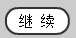
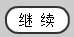
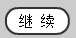
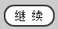

import time
count = 0
day = 0
while 1 == 1:
localtime = time.localtime(time.time())
if 0 == day:
day = localtime.tm_mday
if (day <> localtime.tm_mday) and (1 == localtime.tm_hour):
break
foundTicket = exists(, 10)
print localtime
if (None <> foundTicket) :
print "foundTicket"
option = count % 4
if (option == 0) :
print "click A"
click()
elif (option == 1):
print "click B"
click()
elif (option == 2):
print "click C"
click()
elif (option == 3):
print "click D"
click()
else:
print "click A"
click( )
wait()
click()
exists(, 5)
print "finish"
)
wait()
click()
exists(, 5)
print "finish"